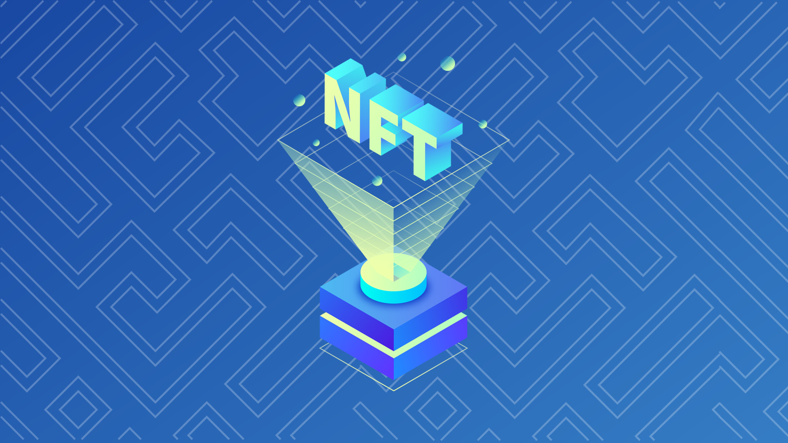
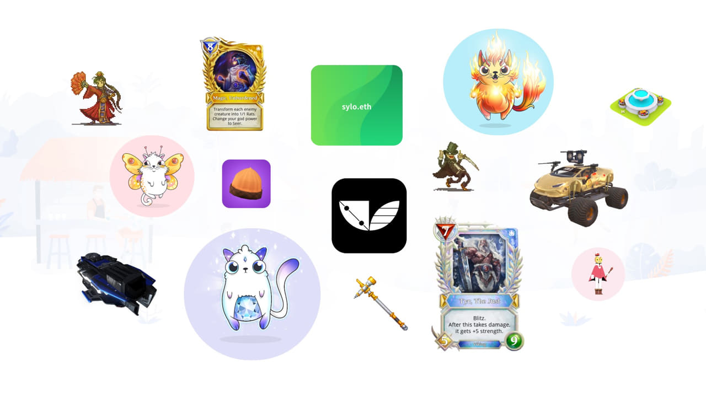

NFT - NON FUNGIBLE TOKEN
What is NFT "non-fungible tokens". The current high interest in NFT by larger boarder audience as made it's value sky rocketed as demand for these virtual tokens are increasing throughout

Non-fungible tokens are used to create verifiable digital scarcity, as well as digital ownership, and the possibility of asset interoperability across multiple platforms. NFTs are used in several specific applications that require unique digital items like crypto art, digital collectibles, and online gaming. Art was an early use case for NFTs, and blockchain in general, because of its ability to provide proof of authenticity and ownership of digital art that has otherwise had to contend with the potential for mass reproduction and unauthorized distribution of art through the internet
